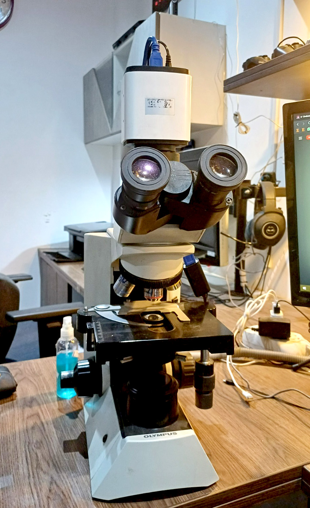

Biopsias, IHQ y digitalizacion WSI de alta fidelidad bajo criterios OMS 5a Edicion. El unico laboratorio en Lima con microscopio digital soberano con Inteligencia Artificial que reduce errores diagnosticos en 68%.


Sistema de diagnostico histopatologico asistido por cuatro motores de IA en paralelo, 100% soberano, sin dependencia de nube, que asiste al Dr. Castillo en deteccion de atipias nucleares, mitosis, gradacion tumoral y diagnosticos diferenciales complejos.
Cada especimen es procesado con tecnica histotecnica estandarizada y auditado bajo guias CAP y OMS 5a Edicion.
Biopsias prostaticas extendidas ISUP/Gleason, mapeo de margenes quirurgicos, carcinomas uroteliales y patologia testicular/renal de alta complejidad.
Paneles diagnosticos y pronosticos exhaustivos Dabbs: Ki-67, p63, p40, CK7/20, HER2, receptores hormonales, c-Kit y marcadores mesenquimales.
Digitalizacion Whole Slide Imaging a 40X. Acceso remoto desde cualquier dispositivo. Zoom, navegacion y consulta de especialistas sin fronteras geograficas.
Papanicolaou en base liquida, citologia de orina, liquidos serosos y biopsias por aspiracion de tiroides y partes blandas sistema Bethesda.
Revision exhaustiva de tacos de parafina y laminas previas con discrepancia diagnostica. Casos oncologicos limitrofes con validacion IHQ.
El informe firmado digitalmente llega en PDF criptografico al telefono del cirujano y al sistema clinico en tiempo real.

Pionero en la implementacion del primer microscopio digital soberano con Inteligencia Artificial del Peru. Especialista en uropatologia oncologica, patologia de partes blandas, dermatopatologia e inmunohistoquimica diagnostica bajo criterios OMS 5a Edicion y guias CAP/Dabbs. Director del sistema de diagnostico histopatologico digital JC PATH LAB con cuatro motores de IA en tiempo real.
Coordinamos recojo de muestras en clinicas de Lima y Arequipa. Entrega digital en menos de 24 horas.